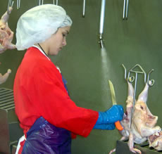

POULTRY INDUSTRY WORKERS
 ShareCompartir
ShareCompartir

Poultry Breeding, Farming, and Transport
Individuals involved in poultry breeding, farming, and the loading and transport of poultry to processing facilities face a number of potential health hazards. Exposures to chemicals such as ammonia or disinfectants and detergents used on poultry farms are possible as well as exposures to agricultural dust, both inorganic and organic. Infections and resultant health effects may occur due to exposures to biological agents including viruses (e.g., avian influenza virus and West Nile virus), bacteria (e.g., Campylobacter jejuni, E. coli, Salmonella), and fungi (e.g., Histoplasma capsulatum). Musculoskeletal injuries may result from working in awkward body positions during activities such as poultry catching. Thermal stress experienced during warm summer months and cold winter months may also be a concern. Noise exposures, particularly in poultry confinement houses, can also be a significant concern. Traumatic injuries and deaths of poultry farm workers have occurred from improper practices and use of industrial machinery present on poultry farms. This section provides links to information and investigations about the evaluation and control of these and other potential hazards during poultry breeding, farming, and transport.
Biological Hazards
CDC and NIOSH Publications and Research:
- CDC Diseases and Conditions: Avian Influenza Infection [Bird Flu]
- CDC Diseases and Conditions: Campylobacter jejuni Infection [Campylobacteriosis]
- CDC Diseases and Conditions: Chlamydophila psittaci Infection [Psittacosis]
- CDC Diseases and Conditions: Escherichia coli Infection [E. coli Infection]
- CDC Diseases and Conditions: Salmonella Infection [Salmonellosis]
CDC Features:
- Keeping Backyard Poultry
-
Multistate Outbreak of Human Salmonella Altona and Salmonella Johannesburg Infections Linked to Chicks and Ducklings
Collaborative investigative efforts of state, local, and federal public health and agriculture officials linked two outbreaks of Salmonella infections to chicks and ducklings. -
Morbidity and Mortality Weekly Report January 23, 2009/58(02);25-29: Multistate Outbreak of Salmonella Infections Associated with Live Poultry - United States, 2007
This report describes two distinct and unrelated Salmonella serotype Montevideo outbreaks in the US, which demonstrate the ongoing risk for Salmonella infection from live poultry, particularly those purchased from agricultural feed stores or hatcheries. -
NIOSH Alert: Protecting Poultry Workers from Avian Influenza (Bird Flu)
DHHS (NIOSH) Publication No. 2008-128
This Alert presents background and frequently asked questions (FAQs) about avian influenza (also known as bird flu) and its risk of infection to humans, particularly to poultry growers and their workers. Five reports of outbreaks of avian influenza in poultry and associated human cases are described. Recommendations for protecting poultry workers are provided. -
Morbidity and Mortality Weekly Report March 30, 2007/56(12);273-276: Three Outbreaks of Salmonellosis Associated with Baby Poultry from Three Hatcheries - United States, 2006
During 2006, state health departments notified CDC of three outbreaks of Salmonella species infections in persons who had been in contact with chicks and other baby poultry (ducklings, goslings, and baby turkeys). -
Histoplasmosis: Protecting Workers at Risk
DHHS (NIOSH) Publication No. 2005-109
This booklet help readers understand what histoplasmosis is and recognize activities that may expose workers to the disease-causing fungus Histoplasma capsulatum. This fungus grows in soils having a high nitrogen content, especially those enriched with bird manure, and can be carried on the wings, feet, and beaks of birds, infecting soil under roosting sites or manure accumulations inside or outside buildings. Poultry houses with dirt floors have been found contaminated by H. capsulatum. -
Morbidity and Mortality Weekly Report October 24, 2003 / 52(42);1017-1019: West Nile virus infection among turkey breeder farm workers - Wisconsin, 2002
In 2002, Wisconsin public health officials were notified of two cases of febrile illness in workers at a commercial turkey breeder farm. The Wisconsin Division of Public Health (WDPH) initiated an investigation that found a high prevalence of West Nile virus (WNV) antibody among farm workers and turkeys. An associated high incidence of febrile illness among farm workers also was observed. This report summarizes the results of this investigation, which indicate possible non-mosquito transmission among birds and subsequent infection of humans.
Related Published Articles:
- An Ecological Perspective on U.S. Industrial Poultry Production: the Role of Anthropogenic Ecosystems on the Emergence of Drug-Resistant Bacteria from Agricultural Environments. Curr Opin Microbiol 2011; 14(3):244-250.
- Culture-Independent Characterization of Bacteria and Fungi in a Poultry Bioaerosol Using Pyrosequencing: A New Approach. J Occup Environ Hyg 2010; 7(12):693-699.
- Protecting Poultry Workers from Exposure to Avian Influenza Viruses. Public Health Rep 2008; 123(3):316-322.
- Neurological Symptoms and Neuropathological Antibodies in Poultry Workers Exposed to Campylobacter jejeuni. J Occup Environ Med. 2007; 49(7):748-55.
- West Nile Virus Infection among Turkey Breeder Farm Workers - Wisconsin, 2002. JAMA 2003; 290(21):2793-2796.
- Elevated Risk of Carrying Gentamicin-Resistant Escherichia coli among U.S. Poultry Workers. Environ Health Perspect 2007; 115(12);1738-1742.
- An Outbreak of Psittacosis in Minnesota Turkey Industry Workers: Implications for Modes of Transmission and Control. Am J Epidemiol 1989;130:569-77.
Chemical Hazards
NIOSH Publications and Research:
- Workplace Safety and Health Topic: Ammonia
- NIOSH Health Hazard Evaluation Report: HETA-1994-0331-2535, Cackle Corners, Valliant, Oklahoma (evaluation of organic arsenic exposures at a chicken farm)
Related Published Articles:
- Synergistic Effects of Dust and Ammonia on the Occupational Health Effects of Poultry Production Workers. J Agromed 2002; 8(2):57-76.
- Organic Dust, Endotoxin, and Ammonia Exposures in the North Carolina Poultry Processing Industry. Appl Occup Env Hyg 1990; 5(9):611-618.
Physical Hazards
NIOSH Publications and Research:
- Workplace Safety and Health Topic: Cold Stress
- Workplace Safety and Health Topic: Heat Stress
- Workplace Safety and Health Topic: Noise
Ergonomic Hazards
NIOSH Publications and Research:
Traumatic Injury and Safety Hazards
Related Published Articles:
- Certified Safe Farm: Identifying and Removing Hazards on the Farm. J Agric Saf Health 2010 Apr; 16(2):75-86.
- FACE State Report GA8638: Three Dead, One Critical in Industrial Septic Tank - Georgia . This report details the deaths of three workers who died after entering a waste tank at a chicken hatchery.
- FACE State Report MN9204: Turkey Farmer Dies from Electrocution - Minnesota. This report details the death of a 72-year-old male turkey farmer who died as a result of electrocution when he came into contact with energized turkey feeder equipment.
-
FACE State Report 1998CA-04: Poultry worker is caught in the metal paddles of a feather dryer and dies - California
This report details the recommendations from an investigation of a 39-year-old poultry worker who died when he was struck by and caught in the metal paddles of a feather dryer. - FACE State Report 07KY070: Semi-Tractor Trailer Driver Hauling Chicken Dies after Striking a Rock Wall - Kentucky . This report details the death of a 50-year old semi truck driver hauling chicken in a refrigerated trailer when his semi crashed into a rock wall.
Reported Health Effects
NIOSH Publications and Research:
- NIOSH Workplace Safety and Health Topic: Asthma and Allergies
-
NIOSH Alert: Preventing Asthma in Animal Handlers
DHHS (NIOSH) Publication No. 97-116
This Alert describes three case reports of animal handling workers affected by exposures to animals. The recommendations presented here can help reduce such exposures and prevent animal-induced asthma and allergies.
Related Published Articles:
- Total Dust and Endotoxin in Poultry Operations: Comparison between Cage and Floor Housing and Respiratory Effects in Workers. J Occup Environ Med 2006; 48(7):741-748.
- Respiratory Symptoms and Lung Function in Poultry Confinement Workers in Western Canada. Can Resp J 2003; 10(7):375-380.
- Dose-Response Relationships between Occupational Aerosol Exposures and Cross-Shift Declines of Lung Function in Poultry Workers: Recommendations for Exposure Limits. J Occup Environ Med 2000; 42(3):260-269.
- Respiratory Function in Poultry Workers and Pharmacologic Characterization of Poultry Dust Extract. Environ Res 1995; 70(1):11-19.
- Respiratory Symptoms and Pulmonary Function in Chicken Catchers in Poultry Confinement Units. Am J Ind Med 1991; 19(2):195-204.
Other Resources
- Georgia Tech Research Institute: Agricultural Technology Research Program
- International Labor Organization: International Hazard Datasheet on Poultry Farm Workers
- National Ag Safety Database: Respiratory Health on the Poultry Farm
- OSHA Guidance Update on Protecting Employees from Avian Flu Viruses
- OSHA Poultry Processing Safety and Health Topic Page
- OSHA Safety and Health Information Bulletin 12-13-2004: Avian Influenza Protecting Poultry Workers at Risk
- USDA Food Safety and Inspection Service: Campylobacter Fact Sheet
- USDA Food Safety and Inspection Service: Escherichia coli O157:H7 Fact Sheet
- USDA Food Safety and Inspection Service: Salmonella Fact Sheet
- Page last reviewed: April 8, 2014
- Page last updated: April 8, 2014
- Content source:
- National Institute for Occupational Safety and Health Division of Surveillance, Hazard Evaluations, and Field Studies (DSHEFS)